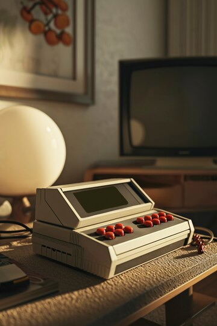

Explorando a História da Tecnologia

A história da tecnologia remonta aos primeiros vestígios de inovação humana, quando nossos ancestrais descobriram ferramentas rudimentares de pedra para facilitar suas tarefas diárias.
Com o passar do tempo, o advento da agricultura e da metalurgia trouxe consigo avanços significativos,
permitindo o surgimento de civilizações antigas como os sumérios, egípcios e mesopotâmicos.
Durante a Idade Média, o mundo viu o florescimento de inventores e cientistas visionários que desafiaram as fronteiras do conhecimento.
Da invenção da imprensa por Johannes Gutenberg à criação dos primeiros relógios mecânicos,
cada inovação tecnológica marcou um passo em direção a um futuro de possibilidades infinitas.